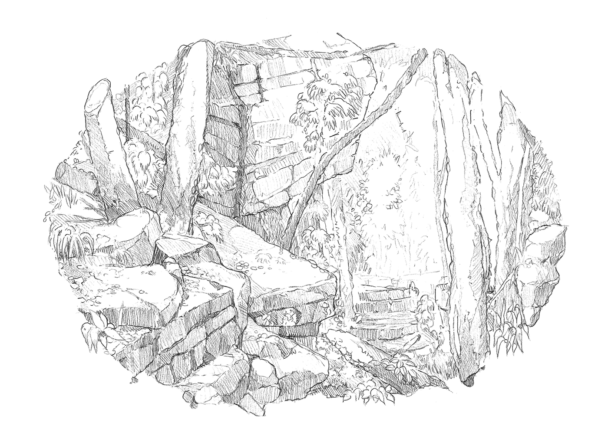

Related: Using basic shapes to build atmospheric rocks!
Related: Using basic shapes to build atmospheric rocks!

In spite of their importance, prominence, and prevalence in the natural world, rocks, boulders, and cliffs are often overlooked as useful props when constructing our environmental stages in artwork! What can they offer us? How do rocks make a viewer feel; or, more accurately, which emotions and personalities are they most strongly associated with? And why do they remain so inscrutable to us? Stones lie across the landscape as faceless, motionless, and immovable forms. In art and literature, the tree has the way of the tender bough and the gentle playfulness of the leaves, and the ocean can speak to us through the dance of a ripple and the roar of a wave. But boulders are silent and unchanging. (It was a miracle for the Israelites of the Torah to yield honey from their cold, rough surface!)
Yet one could say that, in spite of their lack of speech, these characters do in fact speak volumes. As Frodo and Sam traversed the spires of Mordor in Lord of the Rings, the very stones seemed to ominously whisper “you do not belong here”. So let’s see how these curious, unspeaking forms are found in the natural world, how to construct their likenesses, and what use they might be in an illustration.